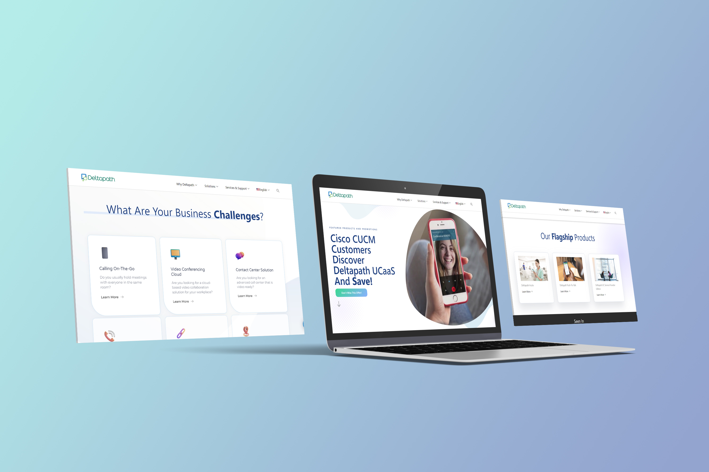
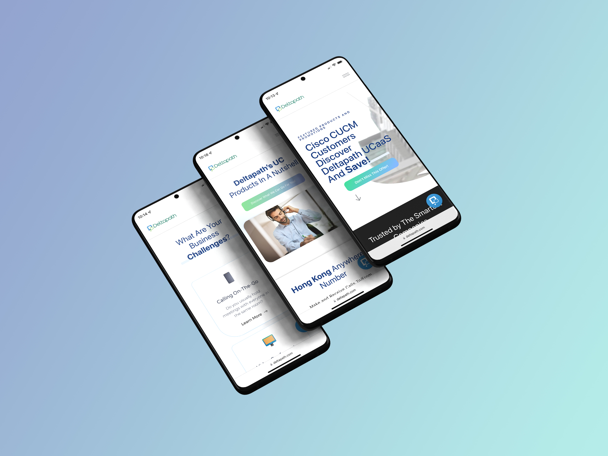
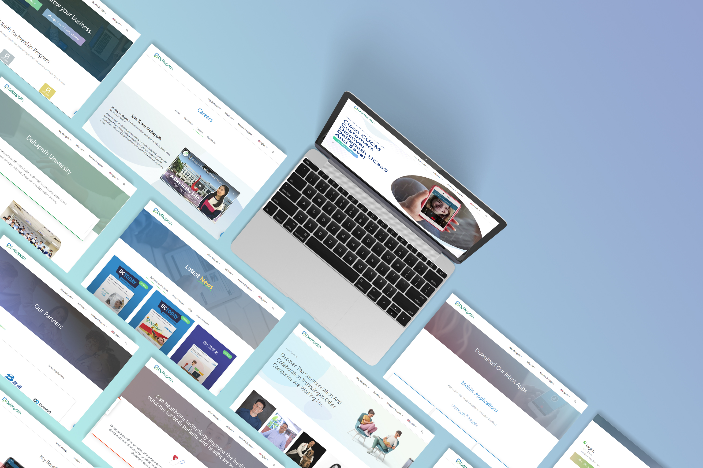
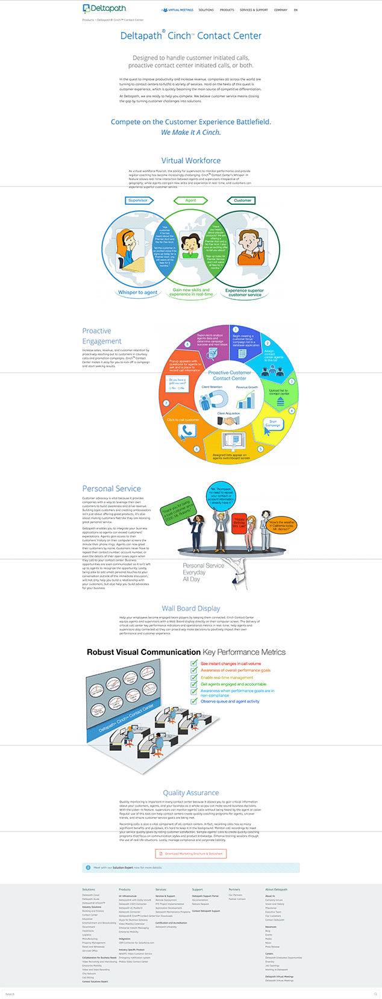
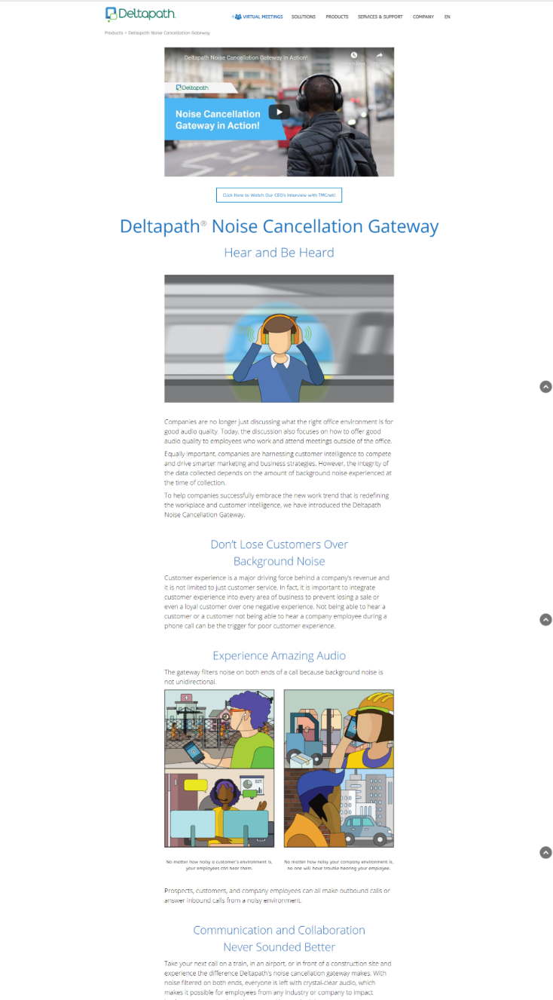
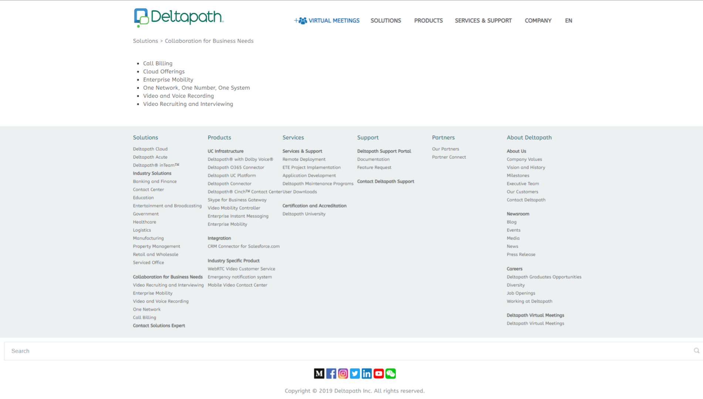
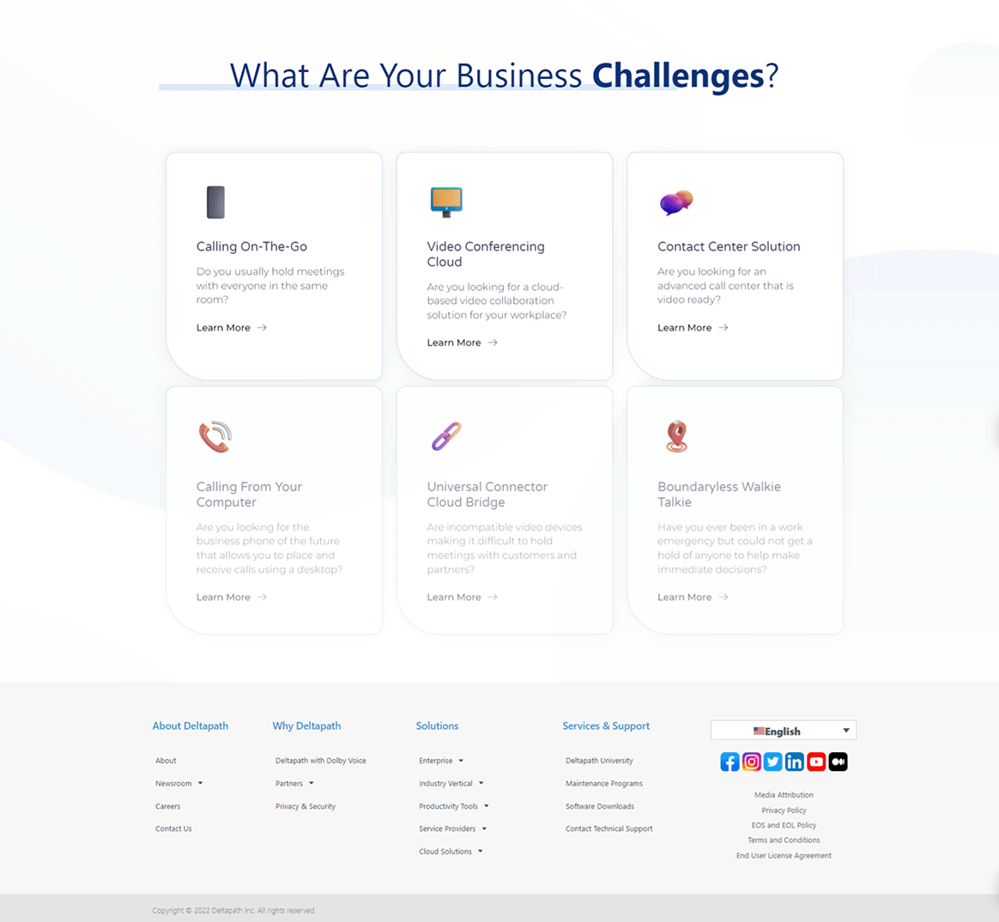
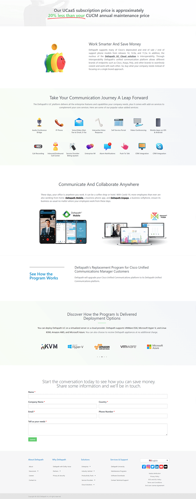
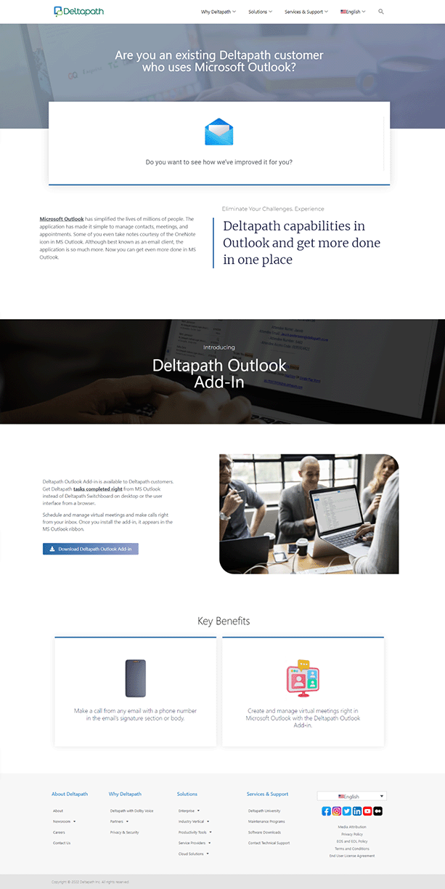

Deltapath Corporate Website
Bckground: Deltapath is a company that specializes in solutions that unite different communication platforms, audio and video equipment, telephones, desktops, and mobile devices to make communication accessible and intuitive. I was assigned to do a complete redesign of Deltapath's corporate website.
Expertise
Web Design & Development
Year
2021



Techonogies:


Problem:
When I learn that Deltapath is one of the pioneers in providing unified communication, I visited their
website to learn more. While browsing the webpages, I couldn't find the answer to my questions about what
the company is about, I did find that the website was desperately in need of a makeover.
The solution page is a list of plain text links and PDFs. The navigational elements are not laid out nicely,
and the images are very outdated since it hasn't been changed since around 2017, with nothing to engage
users or help them understand the product. The website lack structure and a user-centred design.




Process:
I joined the project with the goal of recreating the entire website structure and using a different website
builder to create the looks, so I quickly got up-to-speed on which website builder will suit our needs the
best and the internal processes that made the product stand out. Our goals were to make sure that our
potential customers understand our products by using non-technical language. We identified that, by asking
questions and highlighting pain points from our customers on the website, we can easily attract any other
potential customers with similar issues.
There is a LOT that happened over the course of the year to reach these goals, but my overall process can be
broken down into these sections:
-
Understanding what each product does
-
Research, Research, Research
-
Design iteration and internal feedback
-
Working with the products and marketing department to determine the best solution to highlight on the landing page
Results:
By the time when Deltapath's corporate website was released, we had a plan for how we would evaluate its
success, and gather the information needed to prioritize any future changes. We had an SEO plan and
analytics to make sure that those future changes are made collaboratively.
Overall, we were able to reach our goals, and have gotten positive feedback from customers, and seen an
increase in conversion rate. The new website is available in 4 languages targeting the needs of our North
America and Asia markets and designed with mobile responsiveness in mind to maximize the user experience.



